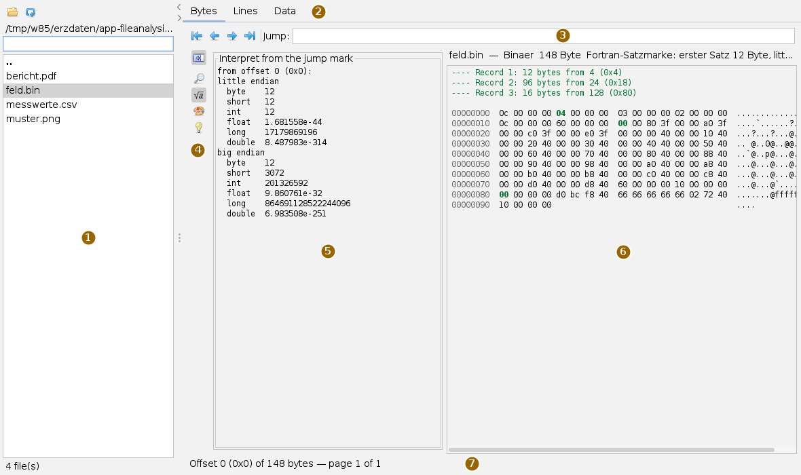
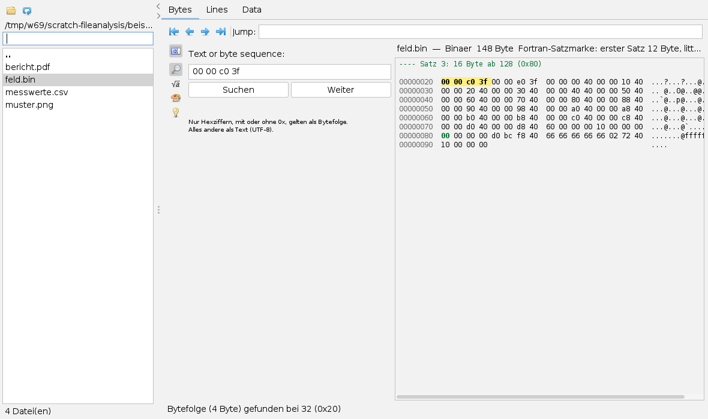
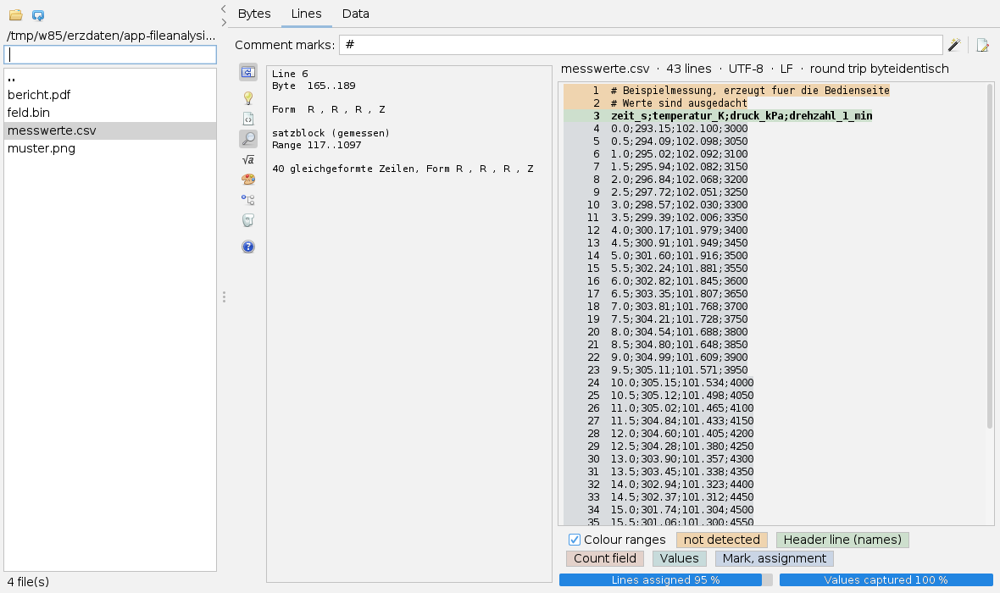
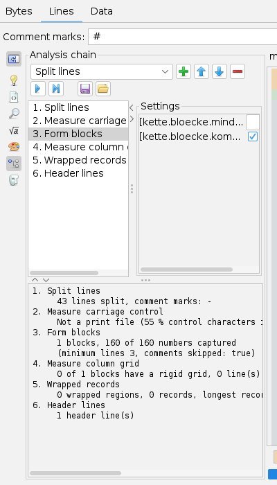
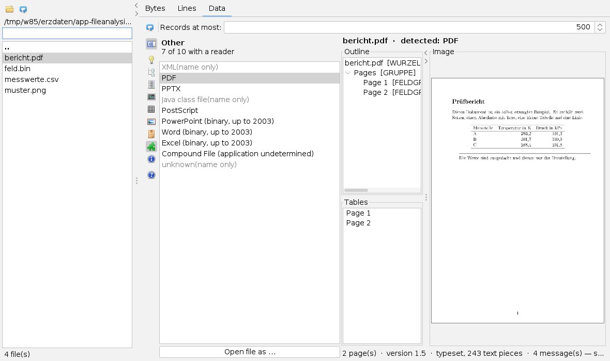

Analysing files
User page, as of 6 October 2026. How to look through a folder, interpret and search the bytes of a file, have a text structure detected and view documents and images. The pictures are screenshots of the app with sample files made for this page.
The window
Open the app from the Apps menu with View a file or with Alt+A. The tab is called File analysis. Settings sit in cards; only for choosing folders and files does the usual file dialog appear.
Some pictures were taken before the English interface was complete and may still show German labels.

The same file can be viewed in three tabs: Bytes shows what is really in the file, Lines lays out a text file by its shape, Data shows what the built-in format readers make of it. Each tab has its own rail. Only the tab in front is computed; the others catch up when you switch to them. The view writes nothing to the file it reads.
The working folder
| Icon | Tooltip | What happens |
|---|---|---|
 | Choose working folder | Choose a folder in the file dialog. |
| Re-read folder | Rebuild the list, for example after a new file appeared. |
The list shows all files in the folder, with no filtering by extension, above them the subfolders (bold) and .. for the folder above. Clicking a folder enters it. Selecting a file means: it is analysed in the tab that is in front. The field above the list narrows the files to names containing the text typed; folders stay. The number of files is shown at the bottom. Subfolders are not scanned, and the list shows no more than 5000 entries. The arrows on the divider fold the working folder away and back.
A typical session
- Open the folder with the unknown files using Choose working folder.
- Click a file in the list. In the Bytes tab the line above the bytes gives size, detected kind and, if present, Fortran record markers.
- For a text file switch to Lines: enter the comment marks, read the colouring and the cards Befund and Regel.
- Switch to Data: if a built-in reader reads the format, you find the layout, tables, pages or the image there.
- Move to the next file with the arrow keys in the list. The last six results per tab are kept in memory; if a file changes in size or time stamp, it is computed again.
The Bytes tab
| Icon | Tooltip | What happens |
|---|---|---|
| To the start of the file | Page from offset 0. | |
| One page back | 1024 bytes back. | |
| One page forward | 1024 bytes on. | |
| To the end of the file | The last 1024 bytes. | |
 | Collapse and expand the toolbar | Hide and show the card; the same icon sits in all three rails. |
 | Search | Search for text or a byte sequence. |
 | Interpret | The bytes from the jump mark as numbers. |
 | View | Colouring on or off. |
 | Guide | Short guide to the working folder and the tab. |
The bytes are shown page by page, 1024 bytes per page and 16 per line: the offset (hexadecimal) on the left, the bytes in the middle, the printable characters on the right. Only the page shown is read. In the Jump: field type an offset, in decimal or hexadecimal with 0x, and press Enter; the view then starts at the line that contains the offset. The location line at the bottom gives offset, file size and page.
If the file has Fortran record markers, the records with length and start are listed above the bytes, and the first byte of each record is green. If the chain of markers breaks, the grid stops.
The Interpret card shows the bytes from the start of the page shown, that is from the jump mark, as byte, short, int, float, long and double, little endian and big endian one below the other. NaN and infinity are written out. In the picture the start of feld.bin gives 12 in little endian: the length of the first record; big endian it would be 201326592.

00 00 c0 3f (the number 1.5 as a float, little endian): hit at offset 32.- Open the Search card and type the search term under Text or byte sequence:. Only hex digits, with or without
0x, count as a byte sequence; anything else is searched as text (UTF-8). - Press Search (or Enter). The search starts at the place shown; the hit is highlighted in yellow, and the location line says what was searched for and where the hit is.
- Next looks for the next hit. If there is none up to the end of the file, the search starts again from the top.
In the View card the box Colour record boundaries and hits switches the colours off, for example to copy the bytes out.
The Lines tab

| Icon | Tooltip | What happens |
|---|---|---|
 | Detect structure again — the rules are guessed, not read | Detect again with the comment marks entered. |
 | Draft a format description (only for copying out, nothing is saved) | Draft and round trip into the Entwurf card. |
| Guide | Short guide. |
 | Outline | The detected rule tree. |
| Finding | What was measured on the line under the caret. |
| Rule | What is asserted from it about the writer. |
| Draft | The drafted format description. |
 | Analysis chain | Detection step by step. |
 | Anonymise — make numbers unrecognisable | Write an anonymised copy. |
- Choose a text file. If the file is binary or empty, no detection runs; instead of the lines you get the measurement (size, share of printable characters, null bytes, detected kind).
- Under Comment marks: enter the characters that comment lines start with, several separated by commas, e.g.
#,!. Without an entry no line counts as a comment. Press Enter or Detect structure again. - Each line takes the colour of the rule that claims it. The unknown stands out, the recognised lies pale; the legend below the text names the kinds. The header line at the top gives the number of lines, character set, line ending and whether the round trip is byte-identical.
- Click into the text: Finding shows line number, byte range, shape and the measured rule; Rule shows the assertion about the writer. The two are kept apart so that you can check the assertion.
- The bars at the bottom: Lines assigned and Values captured, kept apart because a file can be almost fully assigned and still miss the one header line that matters.
- Draft a format description writes a format description into the Draft card and checks it straight away in a round trip on the file (“BYTE-IDENTICAL” or the first differing position). Nothing is saved; the text is there to copy out.
At most the first 4 MB of a file are examined; the header line says so if it was shortened.
Anonymising
The card Anonymise — make numbers unrecognisable writes a copy in which every digit is replaced by another, character for character the same length. Columns, field widths and number shape stay, the values are gone; this cannot be reversed. replace identifiers too maps identifiers consistently to artificial names of the same length, Leave count fields in plain text keeps standalone whole numbers. Write anonymised copy puts the copy as name-anonym.extension in the same folder. If it already exists, nothing is written.
Running text in comments, units, plant and machine names are not recognised. Look at the copy before you pass it on.
The analysis chain

The Analysis chain card splits detection into steps: Split lines, Measure carriage control, Form blocks, Measure column grid, Wrapped records, Header lines.
| Icon | Tooltip |
|---|---|
 | Append step |
| Move step up | |
| Move step down | |
 | Remove step |
 | Run the whole chain |
 | Run up to the selected step |
 | Save chain |
| Load chain |
To add a step, choose it in the drop-down and press Append step. Selecting a step in the list shows its values on the right under Settings. After a run the messages of each step appear below. Only a run of the whole chain recolours the lines; Run up to the selected step only shows the messages up to there. The chain can be saved to a file with the extension .kette and loaded again.
The Data tab

| Icon | Tooltip | What happens |
|---|---|---|
| Read the same file again | Read again, for example after changing the record limit. | |
| Guide | Short guide. |
 | Containers | One card per format group (containers, databases, measurement data, meshes and fields, images, compression, other) with its formats and the button Open file as … |
 | Databases | |
 | Measurement data | |
 | Meshes and fields | |
 | Images | |
 | Packages | |
 | Other | |
 | Findings | What the reader had to report. |
The reader is chosen by the content of the file, not by its extension. The line at the top names the detected format. Afterwards the card of the matching format group is in front, with the format marked in it; if reading fails, the Findings card is in front. Formats with the suffix “(name only)” are detected by the toolkit but not read.
On the left are the layout (Outline) and the tables (Tables), on the right the content. Depending on the format that is:
- Tables (databases, measurement data, meshes, containers): the records of the selected table. At most as many are fetched as Records at most: says (default 500, 10 to 100,000); the footer says when the list was truncated.
- Images: the image, fitted and never enlarged beyond 100 %, transparent areas on a chequerboard. With several sub-images the first is shown.
- PDF, PostScript, PPTX: the pages or slides on the left, the drawn page on the right with the page bar (First page, Previous page, page field, Next page, Last page). A scanned PDF is shown as an image. With a typeset PDF each page reports in the findings what is drawn and that gradients, patterns and transparency are missing.
- HDF4, GIF: a click into the layout shows the structure of the node on the right with name, kind, number of children and properties.
Above an image or a page are  Fit and
Fit and  Actual size (100 %). Drag an enlarged image with the mouse to move it.
Actual size (100 %). Drag an enlarged image with the mouse to move it.
If detection does not say what you expect, choose the suspected format in a group card and press Open file as …. After choosing the file it is read with exactly this reader; its message in the findings says what goes wrong.
Extracting elements
A right-click into the layout opens a menu. For a PDF: Extract text… writes the text of the file (root) or of one page to a text file, Extract images… writes the images as PNG into a folder; an image that could not be converted is named in the footer. For a PPTX file select a shape in the layout; Extract element… writes an image unchanged, a table as CSV, otherwise the text of the shape. For charts and SmartArt the entry is disabled. Target and name are chosen in the file dialog.
Format documentation
Behind a format in a group card there is a small question mark if format documentation exists for it (tooltip “To the comparison of … in the help”). Clicking it shows the documentation from framework-fileformats in full width, with a choice of documents at the top.  Close help and return to the file takes you back.
Close help and return to the file takes you back.
What is saved
When the workspace is saved, the app keeps nothing, not even the working folder; after a restart you choose it again. The file being read is never changed. Writing happens only on an explicit button and always to a new file: the anonymised copy, extracted text and images, and the saved analysis chain.
Keyboard and mouse
Alt+Y opens the app. In the working folder the arrow keys select the next file, which is analysed at once; a folder is entered with a click or Enter. Enter triggers the jump in the jump field, the search in the search field, a new detection in the Comment marks: field and the change of page in the page field of the page bar.
In an image the mouse wheel zooms (factor 1.15 per notch, between 0.05 and 20). With pages and slides the wheel scrolls the page and turns to the next one at the edge; Ctrl+wheel zooms.
Limits
- Jumps and hits set the view to the start of the 16-byte line. Interpretation therefore always starts at a position divisible by 16, not at a single byte.
- The search only runs forward, and only the current hit is coloured.
- The drawn pages and slides are evaluations, not complete renderings; what is missing is listed in the findings.
- Line detection examines at most 4 MB, the data view fetches at most 100,000 records per table.
Icons: Fugue Icons by Yusuke Kamiyamane, licence CC BY 3.0.